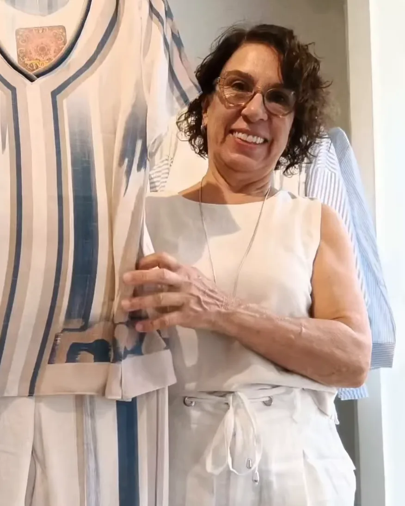
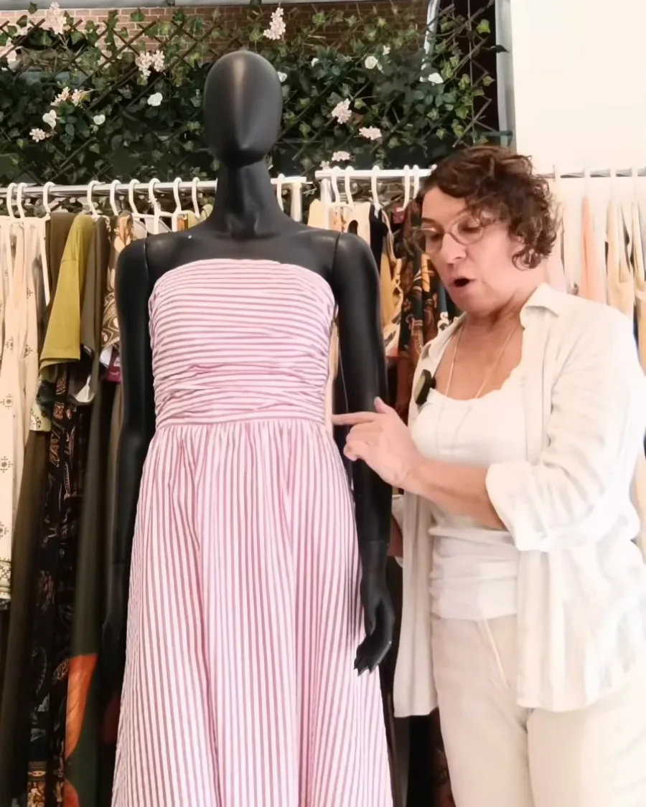

terezinha1801 Saudades desse atendimento e olhar tão único sobre cada uma das suas clientes. Sucesso sempre.
2 curtidasResponder
Virtut · Gutierrez, Belo Horizonte
“Quando a cliente chega na loja, eu dou uma olhada para ela e já vejo mais ou menos o tipo físico dela e o que vai vestir bem ou não.”
Ela veste mulheres há mais de 40 anos. Começou nas feiras da Praça da Liberdade e da Afonso Pena, em Belo Horizonte, e hoje atende na sua loja, Virtut, no Gutierrez, onde escolhe as peças.
Praça da Liberdade e Avenida Afonso Pena · anos 80
A história da Cláudia com a moda começou na feira da Praça da Liberdade. Depois veio a feira da Afonso Pena. “Foram anos de muito trabalho e aprendizado.” A produção cresceu, e as peças passaram a ser vendidas no Brasil todo e também para a Alemanha e para Tenerife, na Espanha. “A gente vendia muito bem em Búzios”, lembra ela.

Divinópolis 1997 · Gutierrez 2005
Com as peças espalhadas por tantas lojas, ela quis ficar perto de quem usa: “eu abri a loja de varejo, sentia falta de conhecer o cliente final”. Em 1997 vieram duas lojas em Divinópolis, no Div Shopping e no Oeste Center. Em 2005, a loja do Gutierrez, em Belo Horizonte, onde ela atende até hoje.

Minas Trend · Itália · Índia
As peças da loja passam pelas mãos dela: “eu vou pinçando aqui, pinço ali”. A Cláudia vai à Minas Trend e já viajou para fora “para dar uma olhada”: Itália, França, Espanha e Alemanha. À Índia, foi pesquisar fornecedor e acabamento.

Na loja
“A mulher sempre está querendo esconder”, diz a Cláudia. Ela fez três cursos de consultoria de estilo, dois deles com Anita Rezende, “para ajudar o cliente a se sentir bem com o próprio corpo”. No dia a dia da loja, ela já mostra: “o que vai ficar bom, o que não vai”.
Uma vez, escolheu algumas clientes, marcou horário e fez um teste para descobrir o estilo de cada uma. “Elas gostaram muito, não sabiam que isso existia.”
A Cláudia também faz consultoria de imagem, com hora marcada, na loja.
“Para mim, moda é aquela que veste com confiança.”
Cláudia
terezinha1801 Saudades desse atendimento e olhar tão único sobre cada uma das suas clientes. Sucesso sempre.
2 curtidasResponder
perdigao_adriana Você é maravilhosa! Sempre saio de sua minha me achando linda!
1 curtidaResponder
Loja linda, com excelência em atendimento! Roupas diferenciadas, de muito bom gosto, para todos os tipos de corpos e personalidades. A Cláudia é sempre muito gentil e atenciosa. As vendedoras muito educadas. Recomendo!
Ver no GoogleFeiras da Praça da Liberdade e da Afonso Pena
Duas lojas em Divinópolis
A marca Vinícius e Cláudia passa a se chamar Virtut
A loja do Gutierrez
A loja completa 20 anos
“Convido todas vocês a virem conhecer a loja e fazer parte da minha história.”
Cláudia
Até duas mensagens por mês, com o que chegou na loja, e as datas fortes: Black Friday, Natal e Dia das Mães. Para sair, é só pedir.